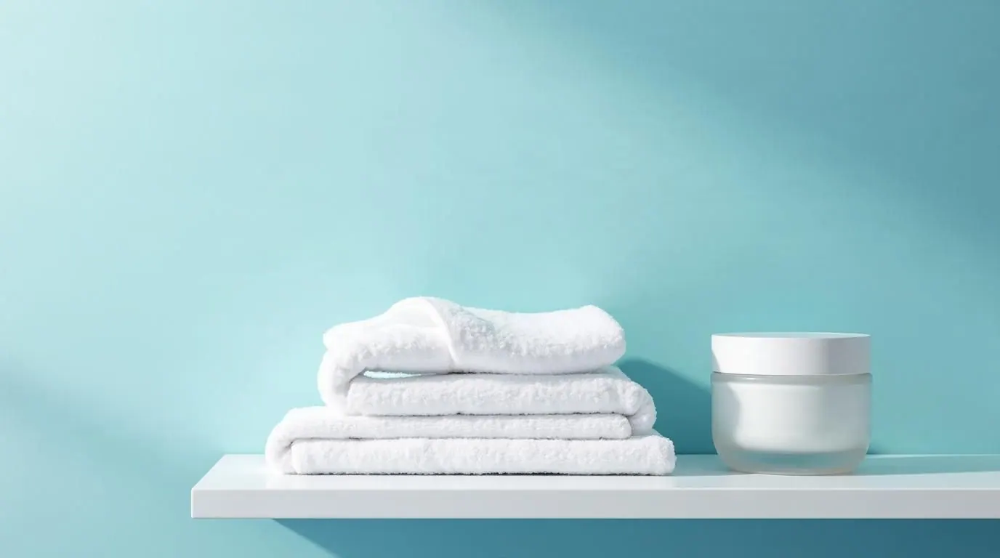

손을 자주 씻거나 물을 많이 만지는 일에서 생기는 손 습진은 물과 세제에 닿는 시간, 장갑 사용, 보습 습관을 먼저 묻고 일하면서도 줄일 수 있는 자극을 함께 찾습니다.
여쭙는 것
- 하루에 손을 몇 번 정도 씻거나 물에 담그시나요?
- 세제나 소독제를 맨손으로 만지시나요?
- 갈라진 곳이 손가락 사이인가요, 손등인가요, 손끝인가요?
생활에서 해 볼 것
- 설거지·청소할 때 면장갑 위에 고무장갑 끼기
- 손을 씻은 뒤 손가락 사이까지 물기를 완전히 닦고 바로 핸드크림 바르기
- 잠들기 전 보습제를 두껍게 바르고 면장갑 끼고 자기
한의원에서 함께 살필 것
- 손 습진이 오래 반복되는 경우 일하는 환경과 피부 상태를 함께 살핍니다.
- 손발이 차거나 땀이 많은 편인지 몸의 전체 리듬을 함께 여쭙니다.
- 가려움과 따가움 때문에 잠이나 일에 지장이 있는 경우 생활 전반을 함께 살핍니다.
먼저 확인이 필요한 신호
- 갈라진 곳에서 고름이 나오거나 붓고 열이 나는 경우
- 작은 물집이 무리 지어 생기며 통증이 심한 경우
- 손톱 모양이 변하거나 손톱 주변이 붓는 경우

손가락 사이가 갈라지고 따가운 손 습진은 물과 세제, 소독제에 반복해서 닿아 피부 장벽이 약해진 경우가 많아, 일을 쉬지 못하더라도 장갑과 보습으로 자극을 줄이는 것부터 시작합니다. 음식점, 미용실, 카페, 육아처럼 하루에도 수십 번 손을 씻는 일을 하시는 분들, 노량진 학원가와 시장 주변에서 일하시는 분들께서 겨울이면 손이 먼저 탈이 난다고 하십니다.
왜 이런 불편이 생길 수 있나요
- 물에 젖었다가 마르기를 반복하면 피부 표면의 기름막이 계속 벗겨집니다.
- 세제와 소독제는 때뿐 아니라 피부를 지키는 성분까지 함께 씻어 냅니다.
- 손가락 사이는 물기가 남기 쉬워 갈라짐과 짓무름이 먼저 생기기도 합니다.
- 찬 바람과 실내 난방이 겹치는 겨울에는 같은 일을 해도 더 쉽게 갈라집니다.

먼저 이렇게 여쭙니다
- 하루에 손을 몇 번 정도 씻거나 물에 담그시나요?
- 세제나 소독제를 맨손으로 만지시나요?
- 갈라진 곳이 손가락 사이인가요, 손등인가요, 손끝인가요?
- 쉬는 날에는 증상이 조금 나아지나요?
- 장갑은 어떤 것을, 얼마나 오래 끼시나요?
일상에서 먼저 해 볼 수 있는 것
- 설거지·청소할 때 면장갑 위에 고무장갑 끼기
- 손을 씻은 뒤 손가락 사이까지 물기를 완전히 닦고 바로 핸드크림 바르기
- 잠들기 전 보습제를 두껍게 바르고 면장갑 끼고 자기
- 향이 강한 손 세정제 대신 순한 제품 쓰기
- 고무장갑 안에 땀이 차면 자주 벗어 말리기

한의원에서 함께 살필 수 있는 경우
- 손 습진이 오래 반복되는 경우 일하는 환경과 피부 상태를 함께 살핍니다.
- 손발이 차거나 땀이 많은 편인지 몸의 전체 리듬을 함께 여쭙니다.
- 가려움과 따가움 때문에 잠이나 일에 지장이 있는 경우 생활 전반을 함께 살핍니다.
좋은꿈참사랑한의원에서는 하루 일과 속에서 손이 물과 세제에 닿는 때를 먼저 자세히 듣고, 필요하다고 판단될 때 진맥·설진으로 몸 상태를 살핀 뒤 침이나 한약 상담 등 상태에 맞는 방법을 정합니다. 일하면서 지킬 수 있는 방법을 함께 정리해 드립니다.
이렇게 기록해 오시면 상담이 쉬워집니다
- 하루 손 씻는 횟수와 물에 닿는 일의 종류
- 일터에서 쓰는 세제·소독제 이름
- 일하는 날과 쉬는 날의 손 사진
- 쓰고 있는 연고와 핸드크림

이런 증상은 먼저 확인이 필요합니다
- 갈라진 곳에서 고름이 나오거나 붓고 열이 나는 경우
- 작은 물집이 무리 지어 생기며 통증이 심한 경우
- 손톱 모양이 변하거나 손톱 주변이 붓는 경우
바르고 있는 연고나 먹는 약은 처방한 의사와 상의 없이 줄이거나 끊지 않습니다. 피부 상태는 사람마다 달라, 사진 기록을 함께 보며 이야기 나누는 것이 도움이 됩니다.
한눈에 보는 표
| 구분 | 핵심 |
|---|---|
| 여쭙는 것 | 하루에 손을 몇 번 정도 씻거나 물에 담그시나요? 세제나 소독제를 맨손으로 만지시나요? |
| 생활에서 해 볼 것 | 설거지·청소할 때 면장갑 위에 고무장갑 끼기 손을 씻은 뒤 손가락 사이까지 물기를 완전히 닦고 바로 핸드크림 바르기 |
| 한의원에서 함께 살필 것 | 손 습진이 오래 반복되는 경우 일하는 환경과 피부 상태를 함께 살핍니다. 손발이 차거나 땀이 많은 편인지 몸의 전체 리듬을 함께 여쭙니다. |
| 먼저 확인이 필요한 신호 | 갈라진 곳에서 고름이 나오거나 붓고 열이 나는 경우 작은 물집이 무리 지어 생기며 통증이 심한 경우 |
자주 묻는 질문
일을 쉬지 못하는데 어떻게 하나요?
장갑과 보습처럼 일하면서 할 수 있는 방법부터 함께 정리합니다. 쉬는 날과 일하는 날의 차이를 기록해 오시면 도움이 됩니다.
손 소독제는 써도 되나요?
알코올 소독제는 건조함을 더할 수 있어, 쓴 뒤에는 보습제를 함께 바르는 것을 권합니다.
면장갑을 끼고 자면 도움이 되나요?
보습제를 바른 뒤 면장갑을 끼면 밤사이 덜 마르는 데 도움이 될 수 있습니다. 답답하거나 땀이 차면 벗으세요.
핸드크림은 언제 바르는 게 좋나요?
손을 씻고 물기를 닦은 직후가 가장 좋습니다. 일하는 중간에는 작은 용기로 자주 덧바르세요.
이 글은 일반적인 건강 정보이며 개인의 진단이나 치료를 대신하지 않습니다. 증상이 있거나 복용 중인 약이 있다면 진료를 통해 확인하세요. 치료 효과는 개인마다 다를 수 있습니다.
작성 기준: 일반적으로 알려져 있는 건강 정보를 참고해 정리했습니다(대표원장 감수). 증상 기록은 1~2주 동안 하루 1회, 비슷한 시간에 적어 오시면 지난 상태와 비교하기 쉽습니다.
좋은꿈참사랑한의원은 재진 때 지난번 이야기부터 이어서 여쭙니다. 진료시간과 예약은 오시는 길에서 확인하세요.